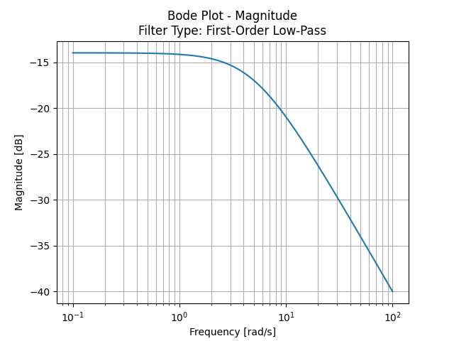
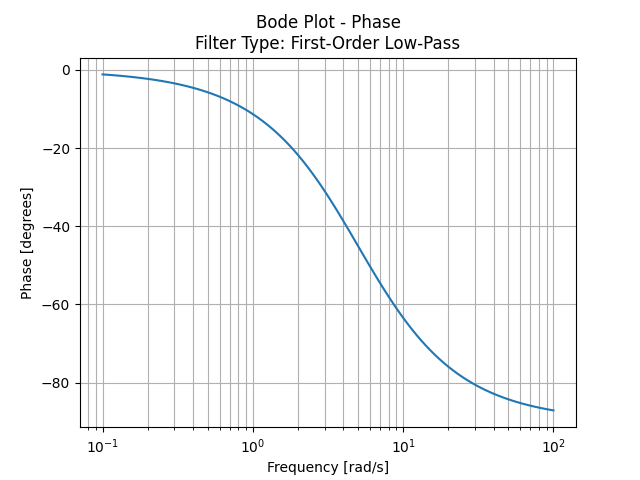

Software · Python
A command-line tool that accepts a transfer function in factored, distributed, or mixed form, then plots the Bode magnitude and phase response. Automatically detects and labels the filter type up to 3rd order.
Bode Plot Calculator takes a transfer function H(s) — entered as a plain text expression at the command line — and produces accurate magnitude and phase plots using matplotlib and scipy. The goal was to make frequency-domain analysis fast and frictionless: no GUI to open, no coefficient arrays to manually type out, just the expression as you'd write it on paper.
The script parses factored forms like 0.2(s + 10)(s + 2), distributed forms
like s^2 + 3s + 1, and any mix of the two. Asterisks are optional, missing
terms are filled in automatically, and if a typo is detected the script prompts you to
re-enter rather than crashing.
Sample Graphs: H(s) = 1 / (s + 5), 1st Order Low-Pass


The script is organized around two parsing stages and a classification stage, all feeding
into a scipy TransferFunction object that drives the plot.
parse_distributed() handles a single expanded polynomial string, splitting on
sign boundaries and building a coefficient array in descending power order.
parse_expression() is the top-level entry point: it strips any leading scalar,
then either delegates directly to parse_distributed() for plain polynomials,
or tokenises parenthesised factors and multiplies them together via np.polymul.
def parse_expression(expr):
expr = expr.replace(" ", "").replace("**", "^")
# Extract optional leading scalar (e.g. the 0.2 in 0.2(s+10))
scalar = 1.0
scalar_match = re.match(r'^([+-]?\d*\.?\d+)\*?(?=[\(s])', expr)
if scalar_match:
scalar = float(scalar_match.group(1))
expr = expr[scalar_match.end():]
if '(' not in expr:
return parse_distributed(expr, scalar=scalar).tolist()
# Tokenise into bare 's', 's^n', or '(...)' groups — then
# multiply all factors together into a single coefficient array
tokens = re.findall(r's\^\d+|s(?!\^)|\([^)]+\)', expr)
poly = np.array([scalar])
for token in tokens:
...
poly = np.polymul(poly, factor)
return poly.tolist()
Once both coefficient arrays are ready, scipy's signal.bode() computes the
frequency response and matplotlib renders separate figures for magnitude (dB) and phase
(degrees), both on a logarithmic frequency axis.
The parser accepts expressions in any combination of factored and distributed form. Terms
don't need to be in order and missing powers are filled in automatically — entering
s^3 + 1 is valid without specifying the zero coefficients in between.
# All of the following are valid inputs Factored: 0.2(s + 10)(s + 2) Distributed: s^5 + 5s^4 + 3s + 1 Mixed: 0.2(s + 10)(s^2 + 3s + 2) Bare s: s(s + 2) No asterisk: 0.2(s+10) ≡ 0.2*(s+10)
After parsing, classify_filter() inspects the roots of the numerator and
denominator to detect integrators (pole at s = 0), differentiators (zero at s = 0), and
right-half-plane zeros, then maps the polynomial orders to a filter label shown in the plot
title. Classification is supported up to 3rd order; above that the Bode plot still renders
correctly but no label is produced.
| Denominator Order | Classifications |
|---|---|
| 1st order | Low-Pass, High-Pass / Shelving |
| 2nd order | Low-Pass, Band-Pass, High-Pass / Notch, Notch (Non-Minimum Phase) |
| 3rd order | Low-Pass, Low-Pass / Band-Pass, Band-Pass, High-Pass / Shelving |
| Any order | Integrator / Low-Pass, Differentiator / High-Pass, Band-Pass (Integrator + Differentiator) |
| Above 3rd | Plot renders accurately — filter label not supported |
Writing a robust expression parser from scratch — without a symbolic math library — pushed me to think carefully about edge cases: implicit coefficients, optional asterisks, mixed factored and distributed forms, and duplicate powers. Regex alone isn't enough; the real work is in correctly combining the tokenised factors via polynomial multiplication.
The classification logic was a good exercise in translating control-theory knowledge into code: deciding what pole and zero conditions uniquely identify a filter type, handling integrators and differentiators as cross-cutting concerns, and knowing where to draw the line on automated classification rather than produce a misleading label.